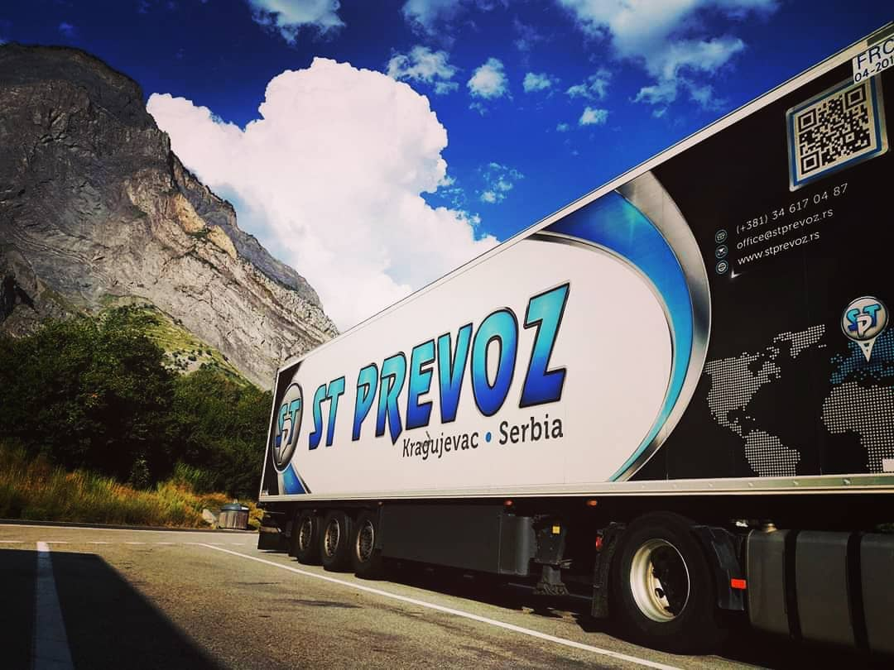

Kompanija ST Prevoz doo je osnovana 1991. godine.
Aktuelno
Some quick example text to build on the card title and make up the bulk of the card's content.
Usluge koje pružamo
Some quick example text to build on the card title and make up the bulk of the card's content.

Kontaktirajte nas
Some quick example text to build on the card title and make up the bulk of the card's content.